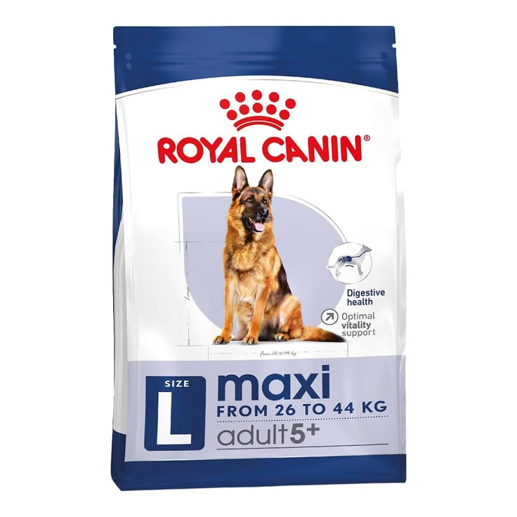
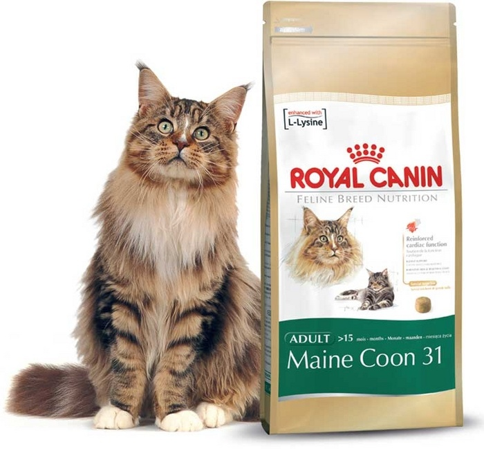

Nuestras recomendaciones para vos:
Tamaño grande

Royal Canin Maxi Adult
Alimento balanceado para perros de gran tamaño. Ayuda al cuidado de las articulaciones y favorece el mantenimiento de la masa muscular.

Pro Plan Adult Large Breed
Rico en proteínas y nutrientes esenciales para perros grandes con un estilo de vida activo.

Royal Canin Maine Coon Adult
Especialmente formulado para gatos de gran tamaño, contribuye a la salud de las articulaciones y al cuidado del pelaje.
Tamaño mediano

Royal Canin Medium Adult
Ideal para perros medianos. Fortalece las defensas naturales y favorece una digestión saludable.

Pedigree Adult
Alimento completo para perros adultos de tamaño mediano, con vitaminas y minerales esenciales.

Purina Excellent Gato Adulto
Nutrición completa para gatos adultos, ayuda a mantener un pelaje brillante y un sistema urinario saludable.
Tamaño pequeño

Royal Canin Mini Adult
Diseñado para perros pequeños. Sus croquetas se adaptan a su mandíbula y aportan la energía que necesitan diariamente.

Dog Chow Adult Minis
Opción balanceada para perros pequeños con vitaminas y proteínas de alta calidad.

Whiskas Junior
Ideal para gatitos de hasta 12 meses. Su fórmula aporta proteínas, vitaminas y minerales esenciales para un crecimiento saludable.